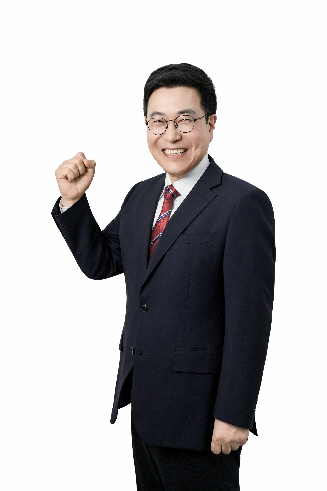

"아이의 하루를 책임지겠습니다"

경남 남해군 (진주고 졸업)
서울대 학사 / 교육학 박사
행정고시 36회 합격 / 전) 교육부 차관보
OECD 정책분석가 / 국립국제교육원장
통학부터 귀가까지
빈틈없이 보호합니다.
공교육의 힘으로
학력 결손을 해결합니다.
AI와 인문의 조화로
경남 인재를 키웁니다.
통학로 위험도 전수 조사 및 안전 인프라 구축
결식 없는 아침밥 지원 및 돌봄 연계
하굣길 디지털 안심 그리드 및 귀가 도우미 배치
로컬푸드 기반 테마 급식 및 카페형 쉼터 조성
AI 학습 분석 플랫폼 및 교육감 직속 튜터제
대입정보센터 상설화 및 진학 전문가 양성
지역 특화 특목고 설립으로 우수인재 유출 방지
거점 고교 활성화 및 12년 연계 교육과정
질문형 수업 도입 및 디지털 윤리 교육 강화
실험 중심 AI 교육 거점 구축 및 글로벌 협력
이중언어 영재교육 상설화 및 기업 인턴십 매칭
교육감 직속 갈등조정관 파견 및 분쟁 해결
교권 신속 법률 대응단 및 업무 경감 로드맵
농협은행 (예비후보자 후원회)
301-0380-9752-51예금주: 경상남도교육감 예비후보자 김영곤 후원회
 블로그
블로그 밴드
밴드